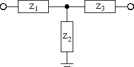
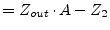

Attenuators are used to damp a signal. Using pure ohmic resistors
the circuit can be realized for a very high bandwidth, i.e. from
DC to many GHz. The power attenuation
is defined as:
where and are the input and output power and
and  are the input and output voltages.
are the input and output voltages.
Figure 14.1:
 -topology of an attenuator
-topology of an attenuator
|
|
Fig. 14.1 shows an attenuator using the
-topology. The conductances can be calculated as follows.
where and  are the input and output reference
impedances, respectively. The -attenuator can be used for an
impedance ratio of:
are the input and output reference
impedances, respectively. The -attenuator can be used for an
impedance ratio of:
Figure 14.2:
T-topology of an attenuator
|

|
Fig. 14.2 shows an attenuator using the
T-topology. The resistances can be calculated as follows.
 |
|
(14.6) |
|
|
(14.7) |
 |
 |
(14.8) |
|
|
(14.9) |
where  is the attenuation (
) according to
equation 14.1 and and
are the input and output reference impedance, respectively.
The T-attenuator can be used for an impedance ratio of:
is the attenuation (
) according to
equation 14.1 and and
are the input and output reference impedance, respectively.
The T-attenuator can be used for an impedance ratio of:
This document was generated by Stefan Jahn on 2007-12-30 using latex2html.
![\includegraphics[width=5cm]{picircuit}](img2561.png)